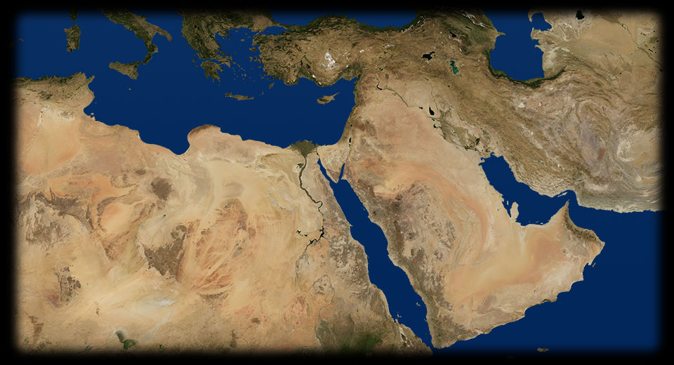

- 110 600
- 140 600
- 125 625
- 140 450
- 90 580
- 60 560
- 140 500
- 160 480
BABILONIA
La Porta di Ishtar, costruita sotto il regno di Nabuccodonosor II e interamente rivestita di tegole in terracotta colorate e smaltate, si apriva sulla via Sacra di Babilonia: è forse l’opera che meglio dà la misura della potenza, anche militare, e della ricchezza della civiltà assira.BABILONIA
Il mitico eroe Gilgamesh, la cui epopea è stata paragonata a quella biblica di Noè, è raffigurato al centro di questo rilievo in pietra tra due uomini-toro.BABILONIA
Il drago con la coda di serpente, incarnazione del dio Marduk, era raffigurato sulla porta della città di Babilonia come simbolo di protezione.ROTTA FENICIA
Questa moneta, che rappresenta una nave e un fantastico animale marino, illustra bene le attività marinaresche e mercantili che caratterizzarono, più di ogni altra, la civiltà dei fenici.ASSUR
L'Impero assiro è fondato sul terrore, sulle torture e sulla deportazione di massa dei popoli sottomessi. Proprio questi fatti portano alle rivolte che distruggono Ninive nel 612 a.C.NINIVE
La capitale dell'Impero assiro, Ninive, è dotata di una vasta biblioteca, fondata da Assurbanipal. In essa sono state ritrovate più di venticinquemila tavolette scritte in alfabeto cuneiforme, che contenevano gran parte del sapere mesopotamico.TIRO
La civiltà fenicia è protagonista della storia arcaica; non si è estesa via terra, ha sviluppato la più grande rete di colonie e commerci marittimi di quel periodo. Protetta dalle minacce esterne dalle catene montuose del Libano, cadrà solamente per mano dell'Impero assiro.GERUSALEMME
La civiltà ebraica, divisa nei Regni di Giuda e Israele, è interessata da numerose persecuzioni e deportazioni: prima gli assiri, che deportano parti delle tribù nel nord della Mesopotamia, poi l'imperatore babilonese Nabucodonosor II, che distrugge Gerusalemme e deporta l'intera popolazione in zone diverse della Mesopotamia, come è narrato anche nel racconto biblico.